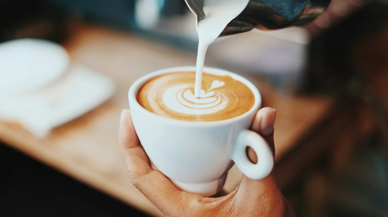
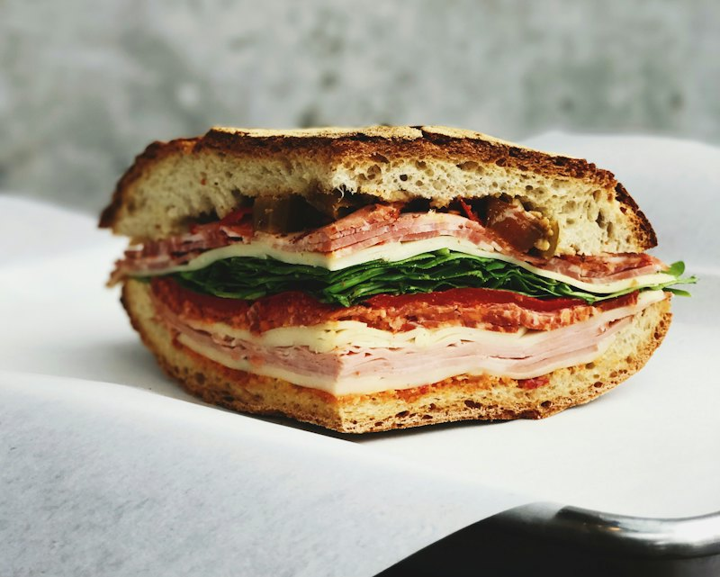
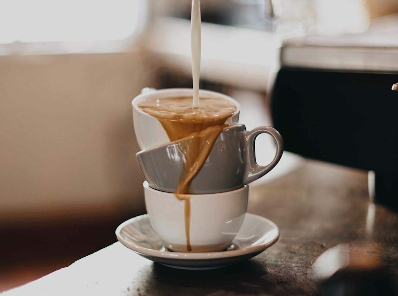

Cuban café
Casa Luna Café
Sample site: a made-up café to show what your website could look like.



About us
Casa Luna is a fictional neighborhood café used as an example. Your real story, photos and menu go here.
Hours
| Mon–Fri | 7 AM – 3 PM |
|---|---|
| Sat–Sun | 8 AM – 2 PM |
Visit
Kendall, Miami, FL